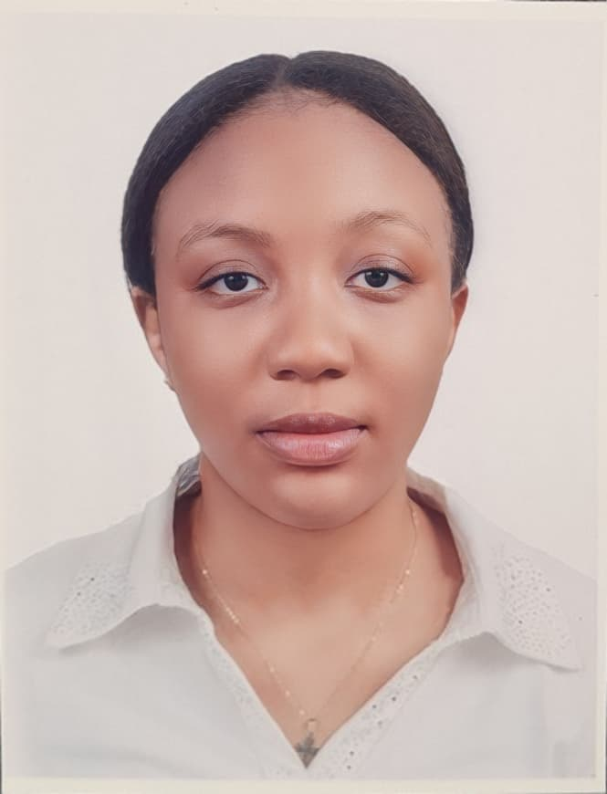

OUR PEOPLE
Meet the Team
A passionate group of young change-makers committed to transforming agriculture and empowering communities across Northern Ghana.




A passionate group of young change-makers committed to transforming agriculture and empowering communities across Northern Ghana.
